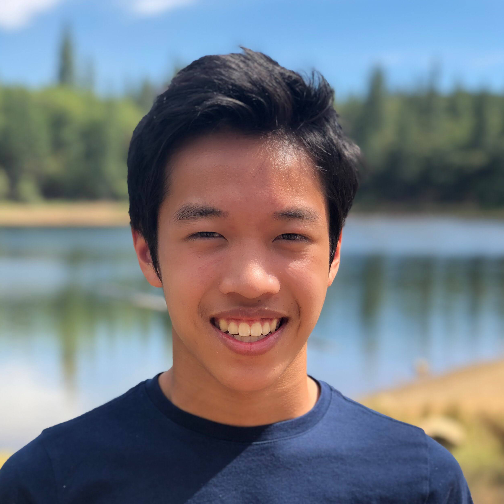

About Us
Meet out wonderful admins and creators!
Click on them to learn more.

Hayden Gong
Co-Founder, President
Hey! My name is Hayden and I am currently a junior at The Bay School of San Francisco. Playing basketball, running track are some of the sports I enjoy. I also like to manage this program, Virtual Tutoring SF. In my spare time, I play Minecraft and learn about business and economics.

Ethan Kwong
Co-Founder
Hello! I'm Ethan, a sophomore at Carnegie Mellon University. I will be majoring in Computer Science and music. During my down time, I enjoy playing music, volleyball, and Minecraft.

Evan Kwong
Co-Founder
I'm Evan, a junior at the Urban School of SF. I spend a lot of my free time playing basketball or in a Discord call with friends and you'll probably catch me playing Valorant, Genshin Impact, or Minecraft at night.

Darren Zhao
Admin, Lead Web Designer
Hello! I'm Darren, a junior at Lowell High School. I enjoy swimming and playing video games. In my free time, I like to play Valorant, R6, and watch anime.

Hayden Kwok
Admin, Web Developer
Hi! I'm Hayden, a freshmen at the College of San Mateo. I help manage VTSF and develop its website. During my free time I enjoy competing for my schools Track and Field team, as well as exploring new places to wander.

Mira Chandriani
Admin
Hello! My name is Mira and I am a senior at The Urban School of San Francisco. I enjoy making music, reading, playing board games, and spending time with friends/family in my free time.

Ashley Chung
Admin
Hi! I’m Ashley and a sophomore at St. Ignatius. I love spending time outside whether it be at the beach watching the sunset or biking with my family. I’m also on varsity dance and crew at SI and enjoy painting and anything creative in my free time.

Calvin Lu
Web Developer
Hey, I'm Calvin. I am a junior at Lowell High School. I am fluent in Java, Python, JavaScript, HTML, and CSS. In my freetime, I like to expand my programming knowledge, play guitar, and video edit.

Justin Yee
Retired Admin and Web Dev
Hello, I'm Justin, a sophomore at UC Davis. Some hobbies of mine are surfing, and playing basketball. I'm a huge sports fan. I designed the original VTSF website with my basic HTML and CSS knowledge combined with the help of many youtube videos.